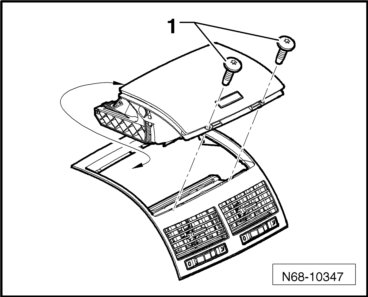
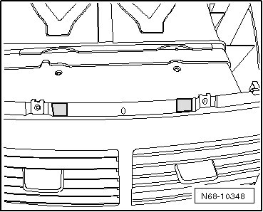

Instrument Panel Center Storage Compartment Trim
Instrument Panel Center Storage Compartment Trim
Removing
- Remove the bolts - 1 - (1.5 Nm) and the storage compartment.

Installing
• If a storage compartment is replaced, make two openings on the fresh air vent in vehicles through MY 2006.
- Insert the new storage compartment in the fresh air vent and mark the openings with a suitable tool - hatched area -.

- Remove the storage compartment and remove the - hatched area - with a diagonal cutter.
- Further installation is in reverse order of removal.